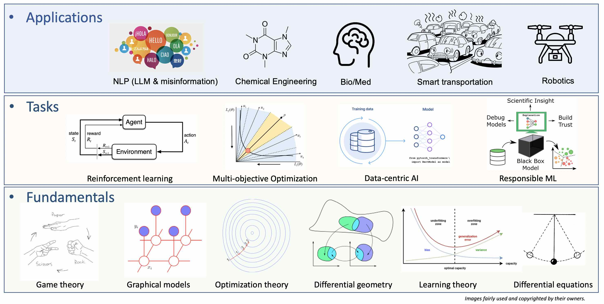

All publications can be found here and Google Scholar.

Graphs are ubiquitous in many applications, such as molecular biochemistry, neural science, Internet, computer vision, NLP, and crowdsourcing. Machine learning on graphs, especially with neural networks, has demonstrated prediction accuracy. However, accuracy is not the only desideratum, and humans and society can still be negatively impacted by the models if care is not taken. For example, a model can lack transparency so that it is hard to understand why it makes a prediction; a model's accuracy may drop due to slight perturbations; or an accurate model can treat different demographic groups or individuals in an unfair way. We aim to make the models more responsible by investigating explainability, fairness, and robustness beyond accuracy of the models.
(i) Fairness. On large graphs, power-law degree distributions are common and can lead to fairness issues in the graphical models and affect end-users. We propose a linear system to certify if multiple desired fairness criteria can be fulfilled simultaneously, and if not, a multi-objective optimization algorithm to find Pareto fronts for efficient trade-offs among the criteria [CIKM 2021]. To reduce optimization cost, the team proposes continuous Pareto front exploration by exploiting the smoothness of the set of Pareto optima. As graphs can contain hidden factors to complicate fairness issues, we simultaneously learn fair models and identify such hidden factors to mitigate the issues [KDD 2023].
(ii) Explainability. Graphical models can be hard to understand by human users due to multiplexed information propagations over many edges. The team published a series of works addressing challenges in making graphical models more interpretable, such as large discrete search space [ICDM 2019], axiomatic attribution [CIKM 2020], multi-objective explanations [ICDM 2021a], and differential geometry for interpreting nonlinear graph evolution [ICLR 2023].
(iii) Robustness. Robustness can be interpreted broadly as maintaining any desired properties under reasonably slight perturbations. We provide robust explanations through self-supervision and constrained optimization [ICDM 2021b], and robust optimization, statistical theory, and optimization convergence analysis [ICML 2023].
Data-centric AI, in contrast to model-centric AI, studies challenges on the data consumed by AI models. One example is the alignment algorithms used for fine-tuning LLMs using human-annotated datasets, where the cost of collecting high quality datasets becomes higher as models become larger; as another example, training robots to navigate in a 3D world needs a large number of annotated 2D and 3D images. We study three problems.
(i) Data quality through ensembling. Data quality can be improved by ensembling multiple sources. We target at fusing multiple human data annotators and/or predictive models, with structured output such as sets, rankings, and trees. The challenges are to gauge the individual model's performance and to take into account the extra knowledge of the output space. Please check out these three papers [ICDM 2013, DSAA 2015, CIKM 2016a] along with others [SDM 2012, KDD 2014, SDM 2015b]. Along with Dr. Qi Li from Iowa State, we extended the framework to address fusion problems on sequential data found in natural language processing [ICDM 2021].
(ii) Active annotation. To reduce annotation cost, we use reinforcement learning to explore the unlabeled data for active annotation. Since finding an optimal data selection strategy needs labeled data, which do not exist before one starts annotating, we adopt meta-bandit to learn an optimal strategy while annotating the data [CIKM 2020]. In certain cases, label spaces can be too large for annotation and selectively annotating data-label pairs can be useful [CIKM 2016b, SDM 2016a]. Active annotations can be extended to structured data, such as sequential texts and general graphs (termed "structured annotations") [UAI 2023].
(iii) Error analysis. Errors are ubiquitous in data-centric AI, and understanding how errors impact the whole pipeline of training AI models is important for correction and improving AI responsibility. We are using conformal prediction on graphical models to quantify uncertainty and its impact on the final models.
Online contents hosted on Twitter (now X), Yelp, Amazon, etc. are full of opinionated information that can significantly influence the audience's decision making. For example, during the COVID pandemic, information about vaccines can significantly influence the rate of vaccinations; dishonest entities have adopted unethical or even illegal strategies by paying spammers to post fake reviews (opinion spams) to promote or demote the targeted businesses and products. Such activities lead to a trust crisis of the online contents. To address the issue, misinformation detection is necessary.
We have adopted propagations over networks [ICDM 2011], temporal patterns [KDD 2012], text features [DSAA 2015], and multi-source data [BigData 2016a, BigData 2015, TKDE 2023]. Misinformation detectors are also constantly under attack from adversarial spammers in changing environments, and robust detectors are critical [BigData 2018, KDD 2020]. Besides robustness, we study interpretable and fair detection [BigData 2016a, IJCNN 2023, KDD 2023]. With the recent advances in LLMs, our next target is studying how LLMs can threaten and/or help existing detection methods.
We are thankful to the following funding agencies for their support of our research.